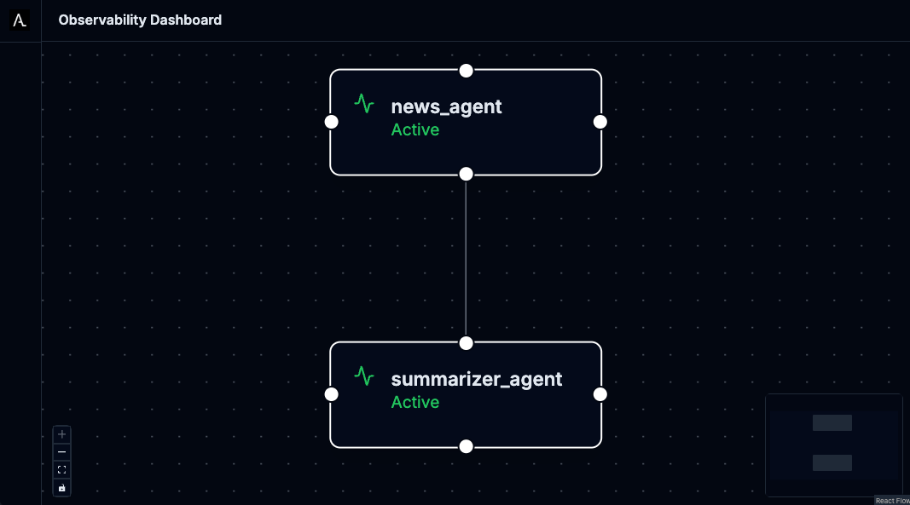

Agentic AI News Showcase
This tutorial will guide you through setting up the Agentic AI News Showcase in a local Kubernetes cluster. The showcase demonstrates multi-agent AI communication using the Agentic Layer platform.

You can find the complete source code in the showcase-news repository.
What You’ll Build
This showcase demonstrates multi-agent AI communication where:
-
The User asks the News-Agent questions like "What’s new in AI?" or "Summarize that article"
-
The Agent Gateway serves an abstraction layer between external queries and agents.
-
The News-Agent fetches latest articles using the News MCP Server (which aggregates RSS feeds from OpenAI, AI News, VentureBeat, etc.)
-
For summarization requests, News-Agent delegates to the Summarizer Agent via A2A protocol
-
The Summarizer Agent scrapes article content from the web and generates concise summaries
-
All agent interactions are traced and visualized through the Observability Dashboard
-
All LLM calls pass through the AI Gateway.
Prerequisites
Before starting, ensure you have the following installed and configured:
Required Software
-
Docker - For containerization
-
kubectl - Kubernetes command-line tool
-
Tilt - Install Tilt for local development
-
curl - For downloading manifests
Access Requirements
-
Gemini API Key - Get yours from Google AI Studio
-
Local Kubernetes Cluster - We recommend:
Step 1: Set Up Your Environment
Step 2: Install Components
Choose between the automated Tilt approach or manual installation to understand each component:
Option A: Automated Installation with Tilt
The quickest way to get started is using Tilt, which automates the entire installation process:
tilt upTilt will automatically:
-
Install cert-manager for webhook certificate management
-
Install the Agent Runtime Operator
-
Install example implementations of an Agent Gateway Operator and AI Gateway Operator
-
Deploy the showcase applications (Agents and ToolServer)
-
Deploy an instance of an Agent Gateway and an AI Gateway
-
Deploy the monitoring stack (LGTM)
-
Deploy the Agentic Layer observability dashboard
-
Create required secrets from your environment variables
-
Build and deploy the news-fetcher MCP server
-
Install the Testbench and deploy the test workflow with automatic trigger
-
Set up port forwarding for easy access
Once Tilt shows all resources as ready, skip to Step 3.
Option B: Manual Installation (Understanding Each Component)
If you want to understand what Tilt does behind the scenes, follow these manual steps:
Install cert-manager
The Agent Runtime Operator requires cert-manager for webhook certificate management. Install it using:
curl -L https://github.com/cert-manager/cert-manager/releases/download/v1.13.2/cert-manager.yaml | kubectl apply -f -Wait for cert-manager to be ready:
kubectl wait --for=condition=Ready pods --all -n cert-manager --timeout=60sInstall Agent Runtime Operator
The Agent Runtime Operator manages AI Agents and MCP ToolServers as Kubernetes custom resources.
See the agent-runtime-operator installation instructions.
Agent Gateway
An AgentGateway exposes Agent workloads through a unified gateway interface.
Kubernetes operators that instantiate an AgentGateway do so by watching AgentGateway resources and automatically deploying some kind of gateway application.
The Agentic Layer team has developed an example implementation of the AgentGateway specification based on KrakenD, namely the "Agent Gateway KrakenD Operator".
To instantiate an AgentGateway:
-
Install an operator, e.g. the agent-gateway-krakend-operator.
-
Apply an
AgentGatewayusingkubectl apply(see instructions).
AI Gateway
An AI Gateway serves as an abstraction layer for LLM provider interactions, providing unified access, security, and intelligent routing.
Kubernetes operators that instantiate an AI gateway do so by watching AiGateway resources and then deploying and configuring some kind of LLM proxy.
One example implementation of the AiGateway specification, maintained by the Agentic Layer team, is based on LiteLLM.
To instantiate an AIGateway:
-
Install an operator, e.g. the ai-gateway-litellm-operator.
-
Apply an
AiGatewayinstance usingkubectl apply(see instructions.
Apply Deployment Manifests
The showcase consists of several components. Let’s apply them in the correct order:
Create Monitoring Stack: This deploys the LGTM (Loki, Grafana, Tempo, Mimir) observability stack:
kubectl apply -f deploy/lgtm.yamlThe monitoring stack provides:
-
Grafana - Dashboards and visualization (port 3000)
-
OpenTelemetry Collector - Trace collection (ports 4317/4318)
-
Loki, Tempo, Prometheus - Logs, traces, and metrics storage
Deploy Agentic Layer Components: This includes the observability dashboard for visualizing agent interactions:
kubectl apply -k deploy/agentic-layer/The observability dashboard:
-
Visualizes agent-to-agent communication in real-time
-
Provides debugging capabilities for AI workflows
-
Exposes metrics about agent performance
Create API Key Secret: Before deploying the agents, create the required secret with your Gemini API key:
kubectl create secret generic api-keys \
--from-literal=GOOGLE_API_KEY="$GOOGLE_API_KEY" \
-n showcase-newsBuild and Load News Fetcher Image: The news-fetcher requires building a custom Docker image before deployment:
# Build the Docker image
docker build -t news-fetcher:latest ./mcp-servers/news-fetcher
# Make the image available to your cluster
# For kind clusters:
kind load docker-image news-fetcher:latest
# For k3s/k3d clusters:
# k3d image import news-fetcher:latest
# For Docker Desktop: the image is already availableDeploy Showcase Applications: Now deploy the main showcase components:
helm install news-showcase ./chartThis deploys:
-
showcase-news namespace - Isolated environment for the demo
-
news-agent - Main agent that handles user queries
-
summarizer-agent - Specialized agent for article summarization
-
news-fetcher - MCP server that aggregates RSS feeds
Verify Deployment
Check that all components are running:
kubectl get pods -n showcase-news
kubectl get pods -n observability-dashboard
kubectl get pods -n monitoringSet Up Port Forwarding
Access the applications through kubectl port forwarding:
# News Agent
kubectl port-forward -n showcase-news service/news-agent 8001:8000 &
# Summarizer Agent
kubectl port-forward -n showcase-news service/summarizer-agent 8002:8000 &
# News Fetcher
kubectl port-forward -n showcase-news service/news-fetcher 8003:8000 &
# Agent Gateway
kubectl port-forward -n showcase-news service/my-agent-gateway 8004:10000 &
# Observability Dashboard
kubectl port-forward -n observability-dashboard service/observability-dashboard 8100:8000 &
# Grafana
kubectl port-forward -n monitoring service/lgtm 3000:3000 &
The & runs each command in the background. Keep the terminal open to maintain the port forwards.
|
Step 3: Access the Applications
Once all components are running and port forwarding is set up, you can access:
-
LibreChat UI: http://localhost:8101 - Chat interface for agents
-
Observability Dashboard: http://localhost:8100 - Real-time agent communication visualization
-
Grafana: http://localhost:3000 - System metrics and logs
-
News-Agent API: http://localhost:8001 - Main agent endpoint
-
Summarizer-Agent API: http://localhost:8002 - Summarization agent endpoint
-
News Fetcher API: http://localhost:8003 - MCP server for news feeds
-
Agent Gateway API: http://localhost:8004 - Gateway for agents
-
AI Gateway API: http://localhost:8005 - Gateway for AI models
Step 4: Test the Setup
There are two different ways to talk to our agents: - Via the agent gateway (recommended). - Directly via the A2A protocol.
Via the Agent Gateway
This variant has the advantage of exposing the agents via an (almost-) OpenAI compatible API.
curl http://localhost:8004/chat/completions \
-H "Content-Type: application/json" \
-d '{
"model": "showcase-news/news-agent",
"messages": [
{
"role": "user",
"content": "What are the top 5 latest AI news? Summarize the first article."
}
]
}' | jqDirectly via A2A
You can query the news-agent directly with a simple A2A query. This connection is only possible because we directly expose the agent.
curl http://localhost:8001/ \
-H "Content-Type: application/json" \
-d '{
"jsonrpc": "2.0",
"id": 1,
"method": "message/send",
"params": {
"message": {
"role": "user",
"parts": [
{
"kind": "text",
"text": "What are the top 5 latest AI news? Summarize the first article."
}
],
"messageId": "9229e770-767c-417b-a0b0-f0741243c579",
"contextId": "abcd1234-5678-90ab-cdef-1234567890a0"
},
"metadata": {}
}
}' | jqOr, test the summarizer agent directly:
curl http://localhost:8002/ \
-H "Content-Type: application/json" \
-d '{
"jsonrpc": "2.0",
"id": 1,
"method": "message/send",
"params": {
"message": {
"role": "user",
"parts": [
{
"kind": "text",
"text": "Please summarize this blog post: https://blog.qaware.de/posts/deepquali/"
}
],
"messageId": "9229e770-767c-417b-a0b0-f0741243c579",
"contextId": "abcd1234-5678-90ab-cdef-1234567890ad"
},
"metadata": {}
}
}' | jqStep 5: Automated Agent Evaluation
The showcase includes an automated evaluation pipeline powered by the Testbench — a Kubernetes-native evaluation system from the Agentic Layer platform. It executes test scenarios against the news-agent via the A2A protocol and scores responses using an LLM-as-a-judge approach with RAGAS metrics. The pipeline is orchestrated by Testkube and runs automatically whenever the agent is redeployed.
Experiment Configuration
The file deploy/experiment.yaml defines the test scenarios as a ConfigMap. An experiment follows a three-level hierarchy:
-
Experiment — top-level configuration (LLM judge model, default threshold)
-
Scenario — a named group of steps (e.g., "Weather in New York")
-
Step — a single user query with expected reference data and metrics to evaluate
-
-
The experiment specifies:
-
LLM Judge Model:
gemini-2.5-flash-lite— a fast, cost-effective model used to evaluate agent responses via the AI Gateway. -
Default Threshold:
0.9— the minimum score a metric must archive to pass the test. -
Evaluation Metrics (per step):
-
AgentGoalAccuracyWithoutReference— Did the agent fulfill the user’s goal? -
ToolCallAccuracy— Did the agent call the correct tools with the right arguments? -
TopicAdherence— Did the agent’s response stay on topic?
-
Scenarios can be single-step or multi-step conversations (the A2A protocol maintains conversation context across steps via a shared context ID). The showcase includes deliberately incorrect references to test negative cases.
Test Workflow
The file deploy/news-agent-test-workflow.yaml defines a Testkube TestWorkflow resource in the testkube namespace. It mounts the experiment ConfigMap and chains four TestWorkflowTemplate phases from the Testbench:
-
Run — Sends each scenario’s queries to the news-agent via the A2A protocol (
http://news-agent.showcase-news:8000) and records responses along with OpenTelemetry trace IDs. -
Evaluate — Scores the agent’s responses using RAGAS metrics with the configured LLM judge (via the AI Gateway).
-
Publish — Exports per-sample evaluation metrics as OpenTelemetry gauges to the OTLP collector, where they can be visualized in Grafana.
-
Visualize — Generates a self-contained HTML dashboard with summary cards, score charts, metric distribution histograms, and a searchable results table.
Automatic Test Trigger
The file deploy/news-agent-test-workflow-trigger.yaml defines a Testkube TestTrigger that watches the news-agent Deployment in the showcase-news namespace. Whenever the deployment is modified (e.g., after a new image rollout), the trigger automatically runs the test workflow. This provides continuous quality assurance without manual intervention.
Running Tests
For Tilt users, the Testbench and Testkube are installed automatically and the test workflow + trigger are deployed as part of tilt up. Tests run automatically on every deployment change.
For manual installation (Option B), the test workflow resources are already included in the kustomization (deploy/kustomization.yaml) and will be applied with kubectl apply -k deploy/. However, you must install Testkube and the Testbench Helm chart separately for the workflow to execute.
Understanding the Architecture
The showcase demonstrates several key concepts:
Agent-to-Agent Communication
-
The News Agent delegates summarization tasks to the Summarizer Agent
-
Communication uses the A2A (Agent-to-Agent) protocol
-
All interactions are traced and visualized in real-time
Cleanup
When you’re done exploring, clean up the resources:
If You Used Manual Installation
# Stop port forwarding (Ctrl+C or kill background jobs)
jobs
kill %1 %2 %3 %4 %5 # Adjust numbers based on your running jobs
# Delete deployed resources
kubectl delete -k deploy/
kubectl delete -f https://github.com/agentic-layer/agent-runtime-operator/releases/download/v0.15.0/install.yaml
kubectl delete -f https://github.com/cert-manager/cert-manager/releases/download/v1.13.2/cert-manager.yaml
# Remove the built Docker image (optional)
docker rmi news-fetcher:latest